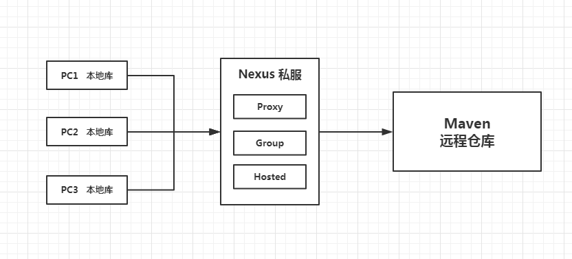
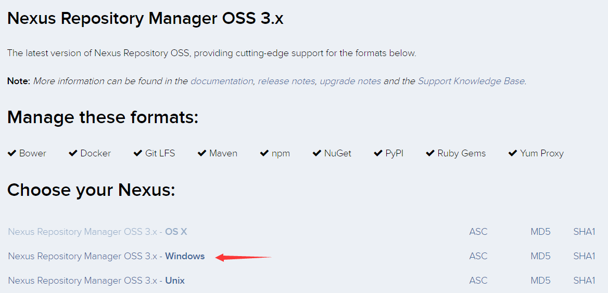
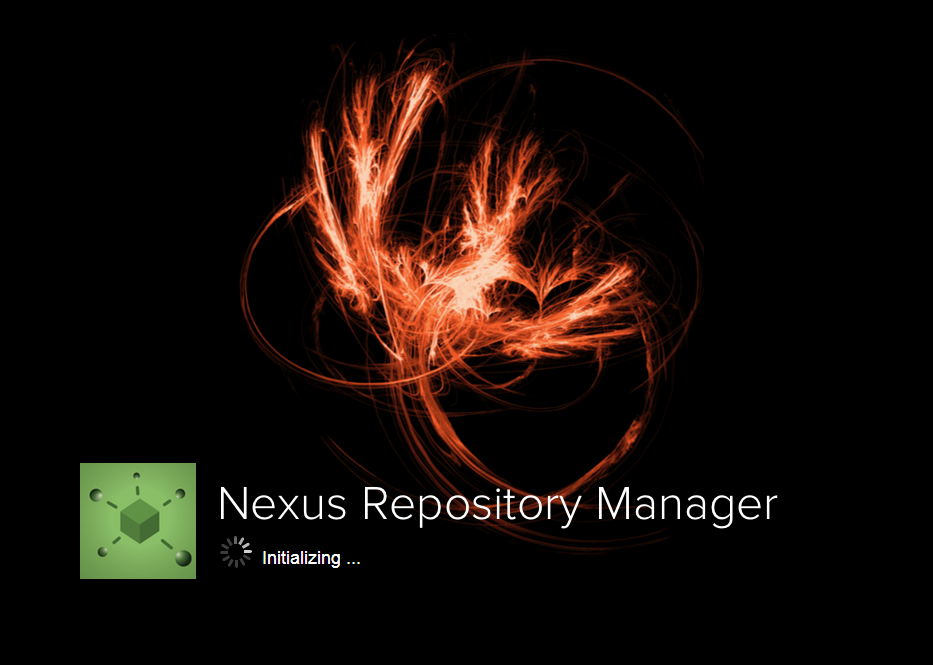
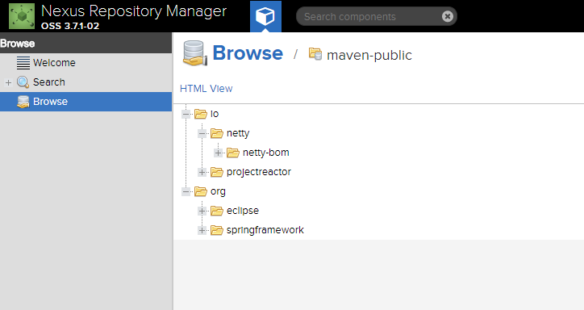
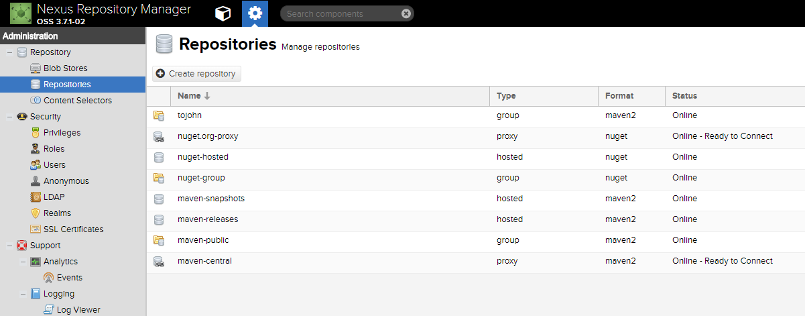
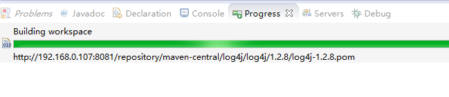
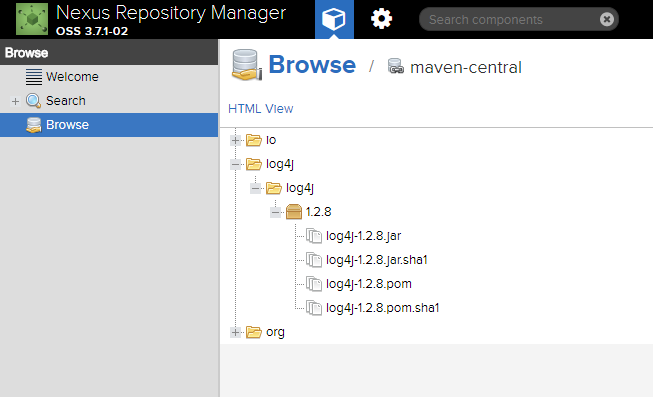
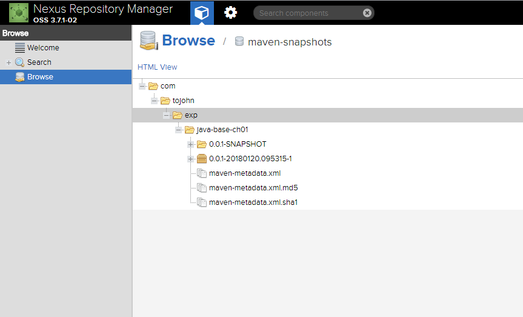

Nexus 是一个强大的 Maven 仓库管理器 , 它极大地简化了自己内部仓库的维护和外部仓库的访问 ; 利用 Nexus 你可以只在一个地方就能够完全控制访问和部署在你所维护仓库中的每个 Artifact ; Nexus 是一套 "开箱即用" 的系统不需要数据库 , 它使用文件系统加 Lucene 来组织数据 ; Nexus 使用 ExtJS 来开发界面 , 利用 Restlet 来提供完整的 REST APIs , 通过 m2eclipse 与 Eclipse 集成使用 ; Nexus 支持 WebDAV 与 LDAP 安全身份认证 ; 使用私服具有以下的好处 :
访问流程如下如所示 :

官网下载地址 :
https://www.sonatype.com/download-oss-sonatype

选择对应的版本下载即可 , 我下载的是 nexus-3.7.1-02 ;
Nexus3.x 是免安装的 , 下载之后解压到指定文件夹就可以了 , 比如 : D:\Program\Nexus
解压完以后会有两个文件夹 , nexus-3.7.1-02 和 sonatype-work , nexus-3.7.1-02 是程序文件夹 , 里面有个 bin 文件夹存放了运行的程序入口 ; sonatype-work 主要是配置/缓存/存储文件夹 ;
打开命令行 , 切换到 Nexus 程序目录 :
# D:
# cd D:\Program\Nexus\nexus-3.7.1-02\bin
输入 nexus /run , 运行程序 :
# nexus /run
过程会比较慢 , 出现如下提示运行成功 :
...
-------------------------------------------------
Started Sonatype Nexus OSS 3.7.1-02
-------------------------------------------------
...
默认端口是 8081 , 要修改端口时需要修改
...\sonatype-work\nexus3\etc”目录下的nexus.properties配置文件 , 修改其中的端口即可
浏览器访问直接输入 http://127.0.0.1:8081/ , 即可进入主页 :

主页访客身份可以浏览已经下载到私服的文件目录 , 如下 :

点击右上角用管理员身份登陆进去 , 默认账户密码是 admin , admin123 :

这里面可以设置 Nexus 的各种仓库配置
回到刚刚的管理员仓库管理界面 , 复制 maven-central 仓库的地址 :
然后在Eclipse 里面的 Maven 项目中配置 pom 文件 , 如下 :
<repositories>
<repository>
<id>nexux</id>
<name>ToJohnNexus</name>
<url>http://192.168.0.107:8081/repository/maven-central/</url>
</repository>
</repositories>
<dependencies>
<dependency>
<groupId>log4j</groupId>
<artifactId>log4j</artifactId>
<version>1.2.8</version>
</dependency>
</dependencies>
保存后就会去给个配置的 Nexus 私服下载 , 如下图 :

私服先检查本地有没有缓存 , 没有缓存就去中央仓库下载 ;
我们可以在 Nexus 首页看到刚刚下载的 log4j 文件目录 :

首先在项目的 pom.xml 文件中配置发布信息 :
<distributionManagement>
<repository>
<id>java-base-ch01-release</id>
<name>java base ch01 release</name>
<url>http://192.168.0.107:8081/repository/maven-releases/</url>
</repository>
<snapshotRepository>
<id>java-base-ch01-snapshot</id>
<name>java base ch01 snapshot</name>
<url>http://192.168.0.107:8081/repository/maven-snapshots/</url>
</snapshotRepository>
</distributionManagement>
然后在本地 Maven 仓库的设置文件中配置 server 节点 :
设置文件默认在 Maven 仓库目录下 , 如 :
C:\Users\tojohn\.m2\settings.xml, 没有的话可以新建一个
<servers>
<server>
<id>java-base-ch01-release</id>
<username>admin</username>
<password>admin123</password>
</server>
<server>
<id>java-base-ch01-snapshot</id>
<username>admin</username>
<password>admin123</password>
</server>
</servers>
账户一定是要有发布权限的账户 , 否则会提示无法授权错误
然后发布项目 , 运行 clean deploy 命令 , 出现如下输出则成功发布 :
...
[INFO]
[INFO] --- maven-deploy-plugin:2.7:deploy (default-deploy) @ java-base-ch01 ---
[INFO] Downloading from java-base-ch01-snapshot: http://192.168.0.107:8081/repository/maven-snapshots/com/tojohn/exp/java-base-ch01/0.0.1-SNAPSHOT/maven-metadata.xml
[INFO] Uploading to java-base-ch01-snapshot: http://192.168.0.107:8081/repository/maven-snapshots/com/tojohn/exp/java-base-ch01/0.0.1-SNAPSHOT/java-base-ch01-0.0.1-20180120.095315-1.jar
[INFO] Uploaded to java-base-ch01-snapshot: http://192.168.0.107:8081/repository/maven-snapshots/com/tojohn/exp/java-base-ch01/0.0.1-SNAPSHOT/java-base-ch01-0.0.1-20180120.095315-1.jar (2.7 kB at 7.3 kB/s)
[INFO] Uploading to java-base-ch01-snapshot: http://192.168.0.107:8081/repository/maven-snapshots/com/tojohn/exp/java-base-ch01/0.0.1-SNAPSHOT/java-base-ch01-0.0.1-20180120.095315-1.pom
[INFO] Uploaded to java-base-ch01-snapshot: http://192.168.0.107:8081/repository/maven-snapshots/com/tojohn/exp/java-base-ch01/0.0.1-SNAPSHOT/java-base-ch01-0.0.1-20180120.095315-1.pom (1.5 kB at 5.3 kB/s)
[INFO] Downloading from java-base-ch01-snapshot: http://192.168.0.107:8081/repository/maven-snapshots/com/tojohn/exp/java-base-ch01/maven-metadata.xml
[INFO] Uploading to java-base-ch01-snapshot: http://192.168.0.107:8081/repository/maven-snapshots/com/tojohn/exp/java-base-ch01/0.0.1-SNAPSHOT/maven-metadata.xml
[INFO] Uploaded to java-base-ch01-snapshot: http://192.168.0.107:8081/repository/maven-snapshots/com/tojohn/exp/java-base-ch01/0.0.1-SNAPSHOT/maven-metadata.xml (778 B at 2.8 kB/s)
[INFO] Uploading to java-base-ch01-snapshot: http://192.168.0.107:8081/repository/maven-snapshots/com/tojohn/exp/java-base-ch01/maven-metadata.xml
[INFO] Uploaded to java-base-ch01-snapshot: http://192.168.0.107:8081/repository/maven-snapshots/com/tojohn/exp/java-base-ch01/maven-metadata.xml (288 B at 693 B/s)
[INFO] ------------------------------------------------------------------------
[INFO] BUILD SUCCESS
[INFO] ------------------------------------------------------------------------
[INFO] Total time: 3.737 s
[INFO] Finished at: 2018-01-20T17:53:16+08:00
[INFO] Final Memory: 19M/224M
[INFO] ------------------------------------------------------------------------
...
再去网页端查看 , 会发现刚刚发布的项目已经在 Nexus 库中了 :
